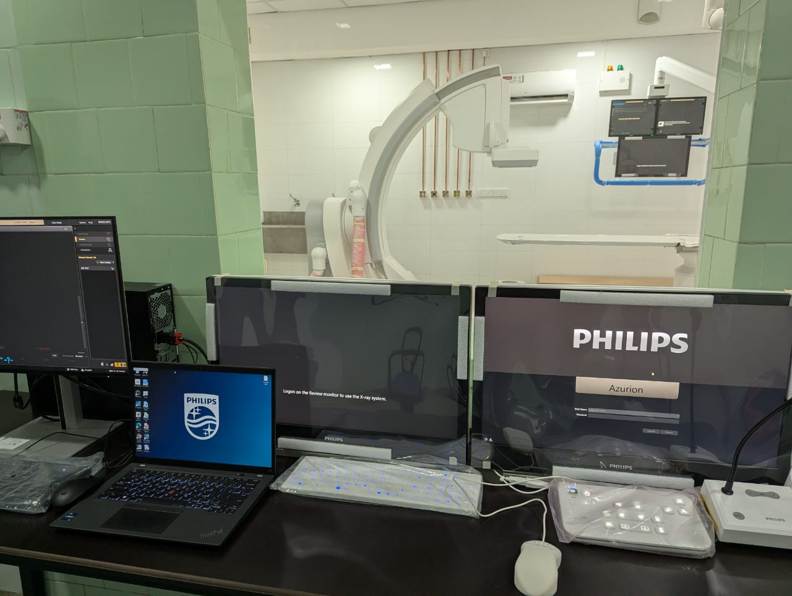
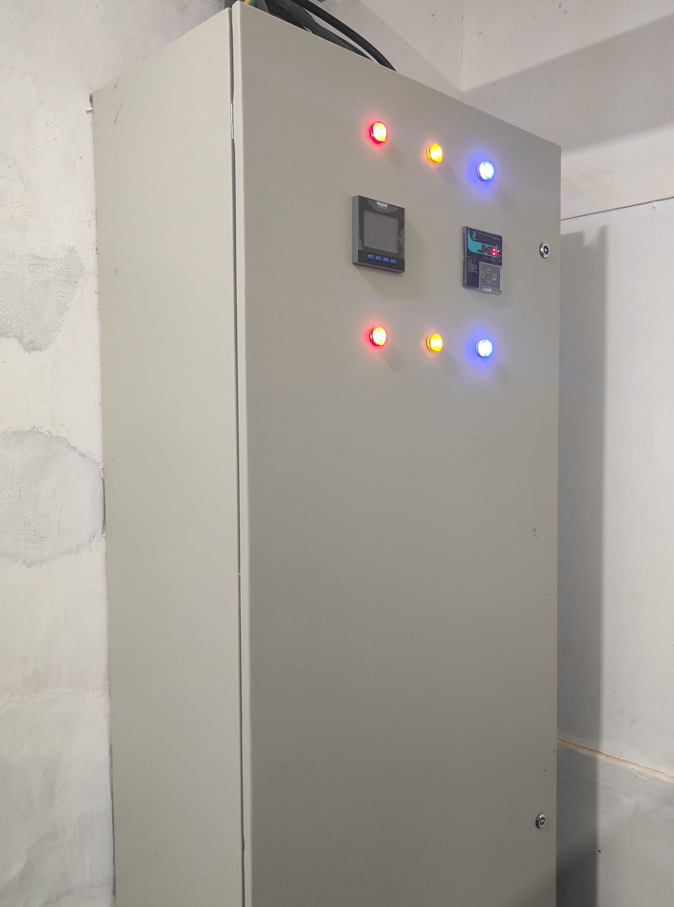
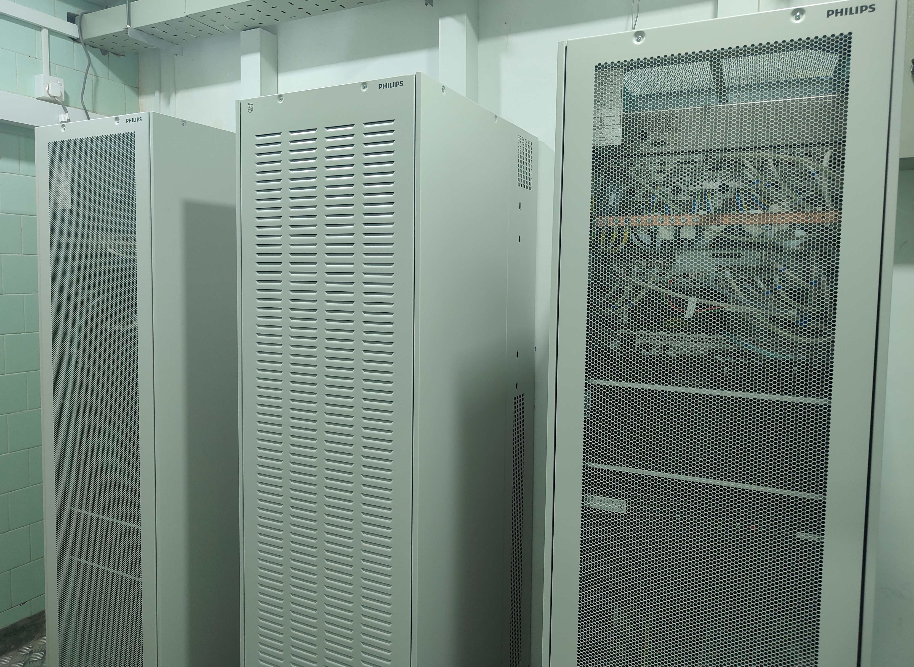
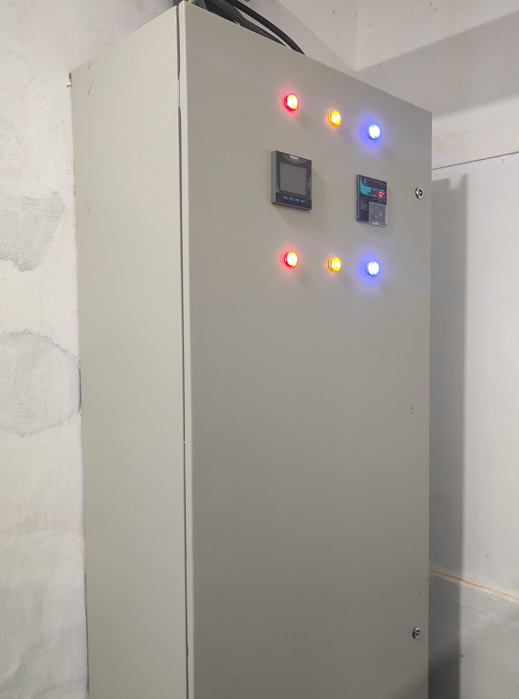
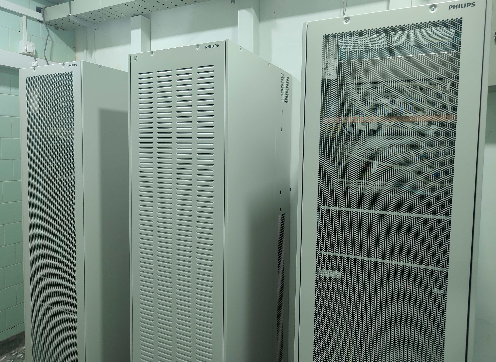
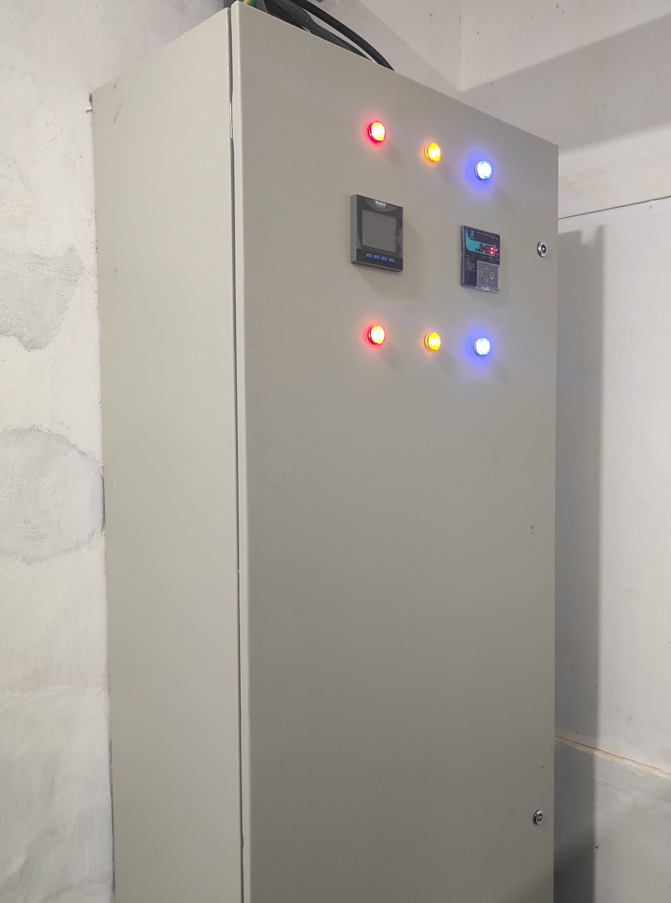
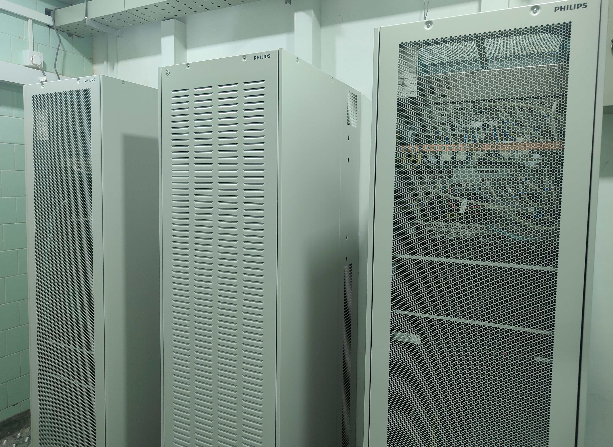

This project involved the complete electrical system design for a new Cardiac Catheterization Laboratory (Cath Lab) at Karapitiya National Hospital. The design was carried out in accordance with hospital electrical safety standards and medical equipment requirements.
Scope of Work
The project scope included power distribution systems, lighting design, emergency power supply integration, earthing, and coordination with medical equipment vendors.
My Responsibilities
I was responsible for preparing electrical layouts, load calculations, cable sizing, BOQ preparation, and coordinating with consultants and site engineers.
Project Gallery

 





Tools & Standards
AutoCAD, IEC Standards, Hospital Electrical Design Guidelines, Emergency Power System Standards.